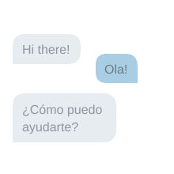

Talk to us: 888-408-7102
Talk to us: 888-408-7102
Talk to us: 888-408-7102
Talk to us: 888-408-7102
It runs on the SoundCurve phone system you already have. You decide the coverage: nights and weekends only, or every call around the clock. Either way, the call gets answered and screened. Then it's booked, passed to the right person, or captured in your CRM for later.
The caller gets a conversation. You get the details.
Want to hear it first? Talk to the AI at (424) 291-9568
Pulled from your account. Change anything that's changed.
You set the rules during setup. Whichever way it goes, the details get captured.
It checks your calendar's real availability and puts the appointment in it.
Your screening questions get asked first, then the caller goes through to the right person with the whole conversation attached.
Hours, services, status, and the pricing rules you set. In their language.
Every time, whichever way the call ended: transcript, summary and sentiment, all on the caller's record in your CRM.
Nothing about your existing phone system changes. It sits in front of the phones, the numbers and the routing you already have, and answers what your team does not.
Same numbers, same phones, same desks. Nothing to unplug and nothing to install.
It uses the auto attendant and ring groups you already have rather than replacing them.
It covers the whole system, whether that is four phones or forty.
Calls arrive the way they do now. The only difference is a summary attached to them.
Pricing it must never quote, promises it must never make, subjects it hands straight to a person. Those rules are yours, and we write them down with you.
We build it around how your calls actually work, then you listen to it and approve it.
Tell us and we switch it off. Your phone system carries on exactly as it does today.
Every call and voicemail becomes searchable text, so you can find the conversation instead of trying to remember who said what.
Key points, action items and decisions pulled out automatically, so you can review a whole call in about thirty seconds.
Each conversation scored from strongly positive to strongly negative, so you spot the unhappy customer before the bad review.
All of it lands on the caller's record in your CRM, so the history is already waiting there the next time they call.
Everything below is included. No tiers, no add-ons, nothing held back for a bigger plan.

Nights, weekends and holidays. Set it to cover the hours you choose, and none of those calls go to voicemail.
Robocalls and solicitors screened out, so your team only sees real callers.
A full, searchable record of every call it handles.
A written summary sent to whoever needs it, right after the call ends.
Callers screened against the questions you define, before anyone picks up.
Callers routed to the right person with the whole conversation attached.
Choose a natural voice that suits your business and the people who call it.

It detects the caller's language and holds the conversation in it.
Your scripts, your call flows, your routing rules, for every scenario you see.
Different details captured for each service you offer, so nothing is missed.
Straight into your CRM, calendar and the tools you already run.
Call volume, bookings and outcomes, tracked over time.
It is configured around how your calls actually work, not a template.
Answers after-hours intake, screens potential clients with your questions, schedules consultations, and texts you the summary before morning.
Takes appointment requests at 7pm, sends forms, and routes urgent calls wherever your protocol says.
Books estimates while your crew pours concrete, gives callers quote information, and texts the details to your crew lead.
Qualifies buyer and tenant leads, schedules showings, shares property details, and coordinates inspections.
Takes reservations and large-party requests during the rush, answers hours and menu questions, and routes catering to the right person.
Books service appointments, answers status questions on work in progress, and takes details when every bay is full.
A few of the others already running on SoundCurve phones.
The call ends and the work is already done. Bookings land in your calendar, caller details land in your CRM, and the summary goes to whoever needs it. Nobody retypes anything.
An add-on to the SoundCurve plan you already have. Your plan does not change.
After your first month, added to your existing SoundCurve bill.
Healthcare, legal or finance? Talk to us about your
compliance requirements first, before you switch call recording on.